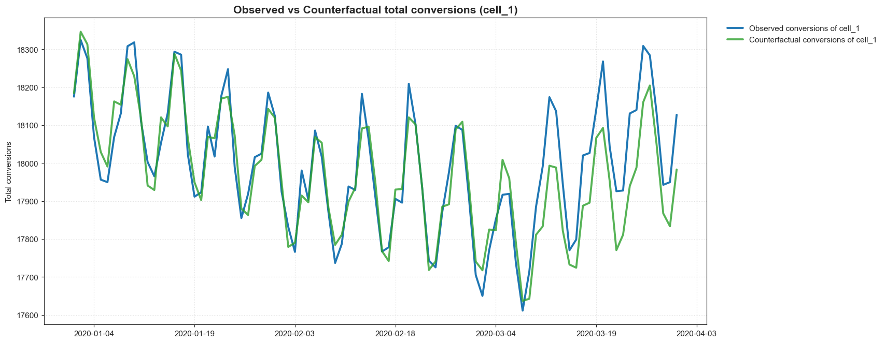
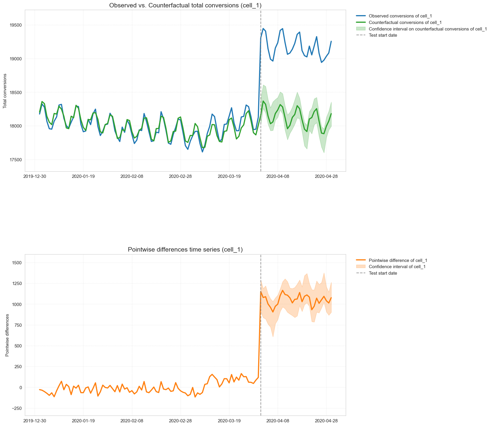
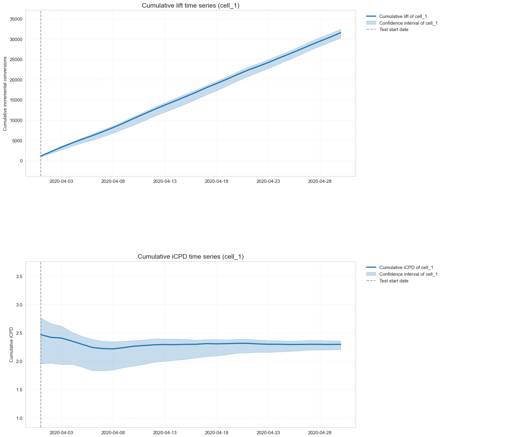

Meridian GeoX is Google's open-source Python library for geo experiments. You give it daily conversions (and, if you have it, spend) by region; it designs the test for you (which regions get the treatment, how long to run, what budget you need and the smallest lift you can detect), then measures the incremental lift once the test is over. The result can feed straight into a Meridian marketing mix model as a calibrated ROI prior.
This guide walks through a full single-cell test with Google's example data: design, launch, analysis, comparing designs, a multi-cell test, and calibrating Meridian with the result. Every code block was run with meridian-geox 1.0.1 and google-meridian 2.2.0 on Python 3.12, and the numbers and charts below are the real output.
When a geo experiment is the right tool
Use a geo experiment when you can't randomise individual users but you can control where the ads run: TV, out-of-home, audio, search or paid social measured on your own sales data, or any channel where platform lift studies don't exist or can't be trusted. You split regions into treatment and control, change the marketing in the treatment regions only, and compare what happened with what the control regions say would have happened. If you have used Meta's GeoLift in R, GeoX does the same job in Python, with stratified geo assignment, multi-cell tests and a direct path into Meridian.
Choose the experiment type
| Type | What changes in the treatment regions | Use it for |
|---|---|---|
| Holdback | A new campaign runs in the treatment regions only; control regions get none | Testing a channel or campaign you aren't running yet |
| Go-dark | Existing spend is switched off (or reduced, "go-dim") | Measuring what a channel you already run is adding |
| Heavy-up | Spend is increased above business as usual | Measuring the return on the next dollar (marginal return) |
Go-dark and heavy-up need a spend column in your data, because GeoX estimates the budget change from your current spend. Holdback only needs conversions.
Install and prepare the data
pip install meridian-geoxGeoX needs one row per region per day with four columns: date, location, conversions (or revenue) and, optionally, spend. Use your own conversion data, ideally from your CRM or backend rather than an ad platform, and make sure it reflects business as usual. You need at least three times as much history as the test will last: a 30-day test needs 90 days of pre-test data. Google's example has 114 regions with daily data from 1 January to 31 March 2020.
import datetime
import pandas as pd
import meridian_geox as geox
design_data = pd.read_csv(
"https://raw.githubusercontent.com/google/meridian-geox/refs/heads/main/"
"meridian_geox/data/example_design_data_single_cell.csv"
)
design_data["date"] = pd.to_datetime(design_data["date"])
design_data["location"] = design_data["location"].astype(str)Design the experiment
A design is a choice of treatment regions plus the power it gives you. GeoX generates thousands of candidate splits, scores them, and returns the best ones:
design_config = geox.DesignConfig(
experiment_duration=datetime.timedelta(days=30),
experiment_types=geox.ExperimentType.HOLDBACK,
methodology=geox.Methodology.TBR, # time-based regression
geo_assignment_rule=geox.GeoAssignmentRule.STRATIFIED_SAMPLING,
cost_per_incremental_conversion=1, # your expected CpIC
cell_count=1,
design_output_count=5,
)
constraints = geox.Constraints(
excluded_geos={"105"}, # regions that must not be in the test
budget_constraint=geox.Budget(budget=500000),
max_conversions_percent=0.3, # treatment regions: at most 30% of conversions
)
quality_checks = geox.QualityCheckConfig(
exclude_geos_no_response=True,
exclude_outlier_dates=True,
)
design_set = geox.run_design(design_data, design_config, constraints, quality_checks)
design_set.design_metricsA few of the settings matter more than the rest:
- Methodology.
TBR(time-based regression) predicts the treatment regions' conversions from the control regions' conversions, fitted on the pre-test period.SDID(synthetic difference-in-differences) is the alternative. - Stratified sampling groups similar regions into strata and samples treatment regions from each, so treatment and control look alike. In practice it gives lower detectable effects than a purely random split.
- Cost per incremental conversion (CpIC) is your best guess of what one extra conversion costs in this channel. For a holdback test, GeoX uses it to turn the detectable effect into the budget you'll need.
max_conversions_percentcaps how much of the business is in the treatment group, which limits the risk of the test.
The top design from the example data:
| Metric | Value | What it means |
|---|---|---|
treatment_geo_count | 27 | Regions that get the campaign |
treatment_conversions_pct | 30.1% | Share of conversions in those regions |
r2 | 0.91 | How well the control regions predict the treatment regions before the test |
mde | 1.31% | The smallest lift the test can reliably detect (80% power, 90% confidence) |
mde_abs | 7,086 | The same, in conversions over the 30 days |
budget | 7,086 | Minimum campaign spend needed: mde_abs × CpIC |
p_value (AA) | 0.39 | A placebo test on pre-test data; a high value means no false lift before launch |
Read the MDE first. If it is larger than the lift you realistically expect, the test will most likely come back inconclusive: lengthen it, add regions, or put more budget behind it. Then check the design-implied CpIC against your own expectation: if the implied CpIC is lower than what you expect to pay, the test is underpowered. For holdback designs the two are equal by construction.
Plot the selected design to see how closely the control regions track the treatment regions before the test:
design_id = design_set.design_metrics["design_id"].iloc[0] # top-ranked design
design = design_set.designs[design_id]
geox.plot_design(design)
Save the design before you launch
Export the design and keep the file with your test plan. You will analyse the test with exactly this file.
with open("geox_design.json", "w") as f:
f.write(design.export_to_json())This step matters more than it looks. The design search is randomised, so running run_design again later can pick a different set of treatment regions. When I tested this, a rerun picked 30 regions instead of 27. Analysing the test against regions that never got the campaign produced a nonsense result. Always analyse with the saved design.
Run the test
Launch the campaign in the 27 treatment regions only, for the full 30 days. Then:
- Check delivery by region in the first few days. Spend leaking into control regions shrinks the measured lift.
- Keep everything else the same in both groups: no promotions, price changes or other channel launches in only some regions.
- Don't stop early because the results look good. The MDE assumes the full duration.
Analyse the results
When the test is over, load the conversion (and spend) data for the pre-test and test periods, and analyse it against the saved design:
analysis_data = pd.read_csv(
"https://raw.githubusercontent.com/google/meridian-geox/refs/heads/main/"
"meridian_geox/data/example_analysis_data_single_cell_holdback.csv"
)
analysis_data["date"] = pd.to_datetime(analysis_data["date"])
analysis_data["location"] = analysis_data["location"].astype(str)
with open("geox_design.json") as f:
saved_design = geox.Design.load_from_json(f.read())
analysis_config = geox.AnalysisConfig(
design=saved_design,
analysis_start_date=pd.to_datetime("2020-04-01"),
analysis_end_date=pd.to_datetime("2020-04-30"),
)
result = geox.analyze(
analysis_data,
analysis_config,
geox.QualityCheckConfig(exclude_outlier_dates=True),
)
result.results["cell_1"]The example campaign's result:
| Metric | Estimate | 90% interval |
|---|---|---|
| Incremental conversions | 31,560 | 30,311 to 32,409 |
| Lift | +5.8% | +5.6% to +6.0% |
| iCPD (incremental conversions per dollar) | 2.30 | 2.21 to 2.36 |
| p-value | 0.002 |
The campaign added about 31,560 conversions over the month, a 5.8% lift in the treatment regions, well above the 1.31% the test was designed to detect. iCPD is the number of incremental conversions per dollar spent, so one extra conversion cost about $0.43 (1 ÷ 2.30). If you analyse revenue instead of conversions, iCPD is your incremental ROAS. A test is inconclusive when its interval includes zero; this one is clearly not.
geox.plot_analysis(result)

Two checks before you trust the number: the pre-test part of the top chart should show observed and counterfactual moving together (it does), and the cumulative iCPD should settle rather than keep drifting (it does, after about a week).
Compare designs before you choose
compare_designs runs several design configurations on the same data and ranks all the resulting designs together, for example random against stratified assignment, or a 14-day against a 30-day test:
comparison = geox.compare_designs(
design_data,
[
(geox.DesignConfig(
experiment_duration=datetime.timedelta(days=30),
experiment_types=geox.ExperimentType.HOLDBACK,
methodology=geox.Methodology.TBR,
geo_assignment_rule=geox.GeoAssignmentRule.RANDOM),
geox.Constraints()),
(geox.DesignConfig(
experiment_duration=datetime.timedelta(days=30),
experiment_types=geox.ExperimentType.HOLDBACK,
methodology=geox.Methodology.TBR,
geo_assignment_rule=geox.GeoAssignmentRule.STRATIFIED_SAMPLING),
geox.Constraints()),
],
)
comparison.design_metricsOn the example data, all ten best designs used stratified sampling, with detectable effects from 1.37% to 1.44%; no random split made the top ten.
Test several treatments at once (multi-cell)
A multi-cell test compares more than one treatment against a shared control group in a single study, for example switching a channel off in some regions and doubling it in others. That gives you both the channel's average return and its marginal return from one test:
# multicell_data: daily conversions and spend by region, prepared as above
multicell_data = pd.read_csv(
"https://raw.githubusercontent.com/google/meridian-geox/refs/heads/main/"
"meridian_geox/data/example_design_data_multi_cell_go_dark_heavy_up.csv"
)
multicell_data["date"] = pd.to_datetime(multicell_data["date"])
multicell_data["location"] = multicell_data["location"].astype(str)
multicell_config = geox.DesignConfig(
experiment_duration=datetime.timedelta(days=30),
experiment_types={
"cell_1": geox.ExperimentType.GO_DARK,
"cell_2": geox.ExperimentType.HEAVY_UP,
},
methodology=geox.Methodology.TBR,
geo_assignment_rule=geox.GeoAssignmentRule.STRATIFIED_SAMPLING,
cell_count=2,
design_output_count=5,
)
multicell_constraints = geox.Constraints(
excluded_geos={"105"},
budget_constraint={
"cell_1": geox.Budget(budget_pct=-1.0), # go dark: -100% of spend
"cell_2": geox.Budget(budget_pct=1.0), # heavy-up: +100% of spend
},
max_conversions_percent=0.3,
)
multicell_designs = geox.run_design(multicell_data, multicell_config, multicell_constraints)On Google's multi-cell example data, the best design put 17 regions in the go-dark cell and 15 in the heavy-up cell, with detectable effects of about 4.4% and 4.3%. Each cell needs its own share of regions, so multi-cell tests need more regions, or more time, than a single-cell test.
Calibrate your Meridian model with the result
This is where GeoX earns its place next to Meridian. A marketing mix model on its own struggles to separate channels that move together; an experiment gives it an anchor. Meridian's CalibrationBuilder reads the GeoX result directly and turns it into an ROI prior for that channel:
from meridian import constants
from meridian.model import model, prior_distribution, spec
from meridian.model.calibration import prior_builder
# `data` is your Meridian InputData (see the Meridian tutorial)
calibration = prior_builder.CalibrationBuilder(data=data)
calibration.with_meridian_geox_experiment_result(
channel_name="Channel0",
geox_results=result,
experiment_kpi_types=constants.NON_REVENUE, # the test measured conversions
)
priors = calibration.build()
mmm = model.Meridian(
input_data=data,
model_spec=spec.ModelSpec(
prior=prior_distribution.PriorDistribution(roi_m=priors.roi_m),
media_prior_type="roi",
),
)The builder does more than copy the number across. It converts conversions into revenue using your model's revenue per conversion, widens the prior when the test's spend level differs from the channel's typical spend, adds uncertainty for older tests (a 52-week half-life), and adjusts for tests that were shorter than the channel's carryover. Channels without an experiment keep Meridian's default ROI prior.
Three things to check before you calibrate:
- The question has to match. Meridian's ROI compares spend with zero spend. Holdback and go-dark tests answer that question. A heavy-up test measures the return on extra spend, which is a different number, so don't feed it in as if it were the average ROI.
- One cell at a time. The builder accepts single-cell results; split a multi-cell study into its cells first.
- The result has to make sense. Meridian rejects results that are significantly negative or have no valid uncertainty, which is how I found the rerun-design problem above.
For the full Meridian workflow, from data to budget optimisation, see my Google Meridian MMM tutorial.
Checklist
- Daily conversion data by region from your own systems, with at least three times the test length of history.
- The right experiment type for the question: holdback or go-dark for "does it work", heavy-up for "what does the next dollar return".
- An MDE smaller than the lift you realistically expect, and a design-implied CpIC that isn't below your expected CpIC.
- The design exported to JSON before launch, and the analysis run with that file.
- Delivery checked by region; nothing else changed in only some regions.
- An interval that excludes zero before you call it a win, and observed and counterfactual tracking each other before the test.
- Only zero-spend comparisons (holdback, go-dark) used to calibrate Meridian's ROI.